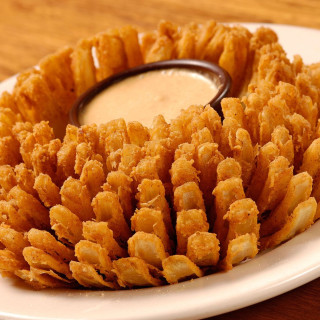

Blooming Onion

Description
A blooming onion, also called onion bloom, onion blossom, onion flower, bloomin' onion, or onion mum, is a dish consisting of one large onion, cut to resemble a flower (after it has expanded while soaking in ice water), battered, and deep-fried, often served with dipping sauce. It is served as an appetizer at some restaurants.
Brief History
References to an "onion mum" consisting of an onion cut into the shape of a flower date as far back as 1947, though this dish did not fry or cook the onion. The more popular fried version of the dish was likely invented in 1985 at New Orleans restaurant Russell's Marina Grill, where future Outback Steakhouse founder Tim Gannon worked at the time.
Ingredients
- 1 Large White onion
- 0.25 Cup Milk, nonfat
- 2 Large Eggs
- 1.5 Teaspoons Paprika
- 1 Teaspoon Garlic powder
- .5 Teaspoon Cajun seasoning
- .5 Teaspoon Black pepper
- 1 Teaspoon Sea Salt
Steps
- Mix breadcrumbs with olive oil & Cajun seasoning. In a separate dish, mix salt & pepper into the our. In a bowl, mix milk with egg.
- Peel onion, cut off top. Place cut side down onto a cutting board.
- Starting 1/2 inch from the root, cut downward, all the way to the cutting board. Repeat to make 4 evenly spaced cuts around the onion.
- Continue slicing between each section until you have made 8 cuts total.
- Place sliced onion in ice water for at least 2 hours / overnight. Remove from water, pat dry. Open onion so “petals” are exposed.
- Beat eggs with 2 Tbsp. milk. Place onion on a tray or in a bowl.
- Sprinkle onion generously with our mixture. Make sure to get in between all “petals.” Turn onion upside down to remove excess our.
- Using a ladle, ladle the egg mixture into every crevice. Lift up onion and turn to make sure excess egg drips off.
- Sprinkle onion very generously with bread crumb mixture. Press into place.
- Place the blooming onion into the Fry Basket of the Power Air Fryer XL. Cover the top with aluminum foil like a tent. Place the Fry Basket into the Power Air Fryer XL.
- Press the M Button to scroll to the Chicken Icon.
- Press the Power Button & adjust cooking time to 10 minutes at 360 degrees. Leave foil on.
- When timer is done, check crispness of the onion. Cook 5-10 more minutes to desired crispness.
- When done, remove carefully and serve with Ranch dressing.